Behind your icons
Glyphdrift draws on the desktop, under your icons and windows. If a busy animation makes icon labels hard to read, the Icon readability setting fades it toward the background color.
Glyphdrift
Contour maps, ASCII art and geometric animations that move slowly behind your desktop icons. It's a small app with no installer, and it never connects to the internet.
Windows 10 and 11 · macOS 12 or later, Apple silicon and Intel · about 0.7 MB
Glyphdrift draws on the desktop, under your icons and windows. If a busy animation makes icon labels hard to read, the Icon readability setting fades it toward the background color.
Most animations use less than 1% of an 8-thread CPU, and the contour ones 1 to 3%. It pauses while a fullscreen app is open and while battery saver or Low Power Mode is on.
Topographic drift can show the time and date in a box in the middle of the screen, with the contour lines bending around it.
No account, analytics or update checks. Your settings are in a text file on your computer, which you can also edit by hand.
Drag a slider or pick a theme and the wallpaper updates while you adjust it. This is the Mac settings window, over the Cubes animation in the Mono theme.
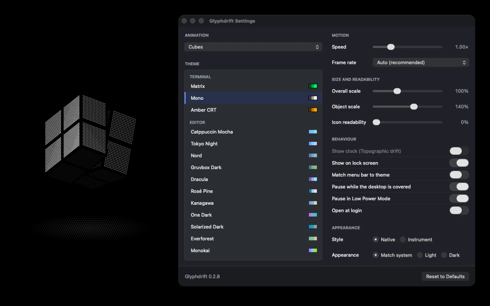
Shown in the theme picked under 22 color themes. Hover over one to see it move, or select it to see it larger.
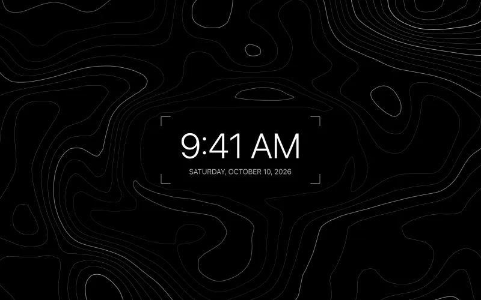
Topographic drift
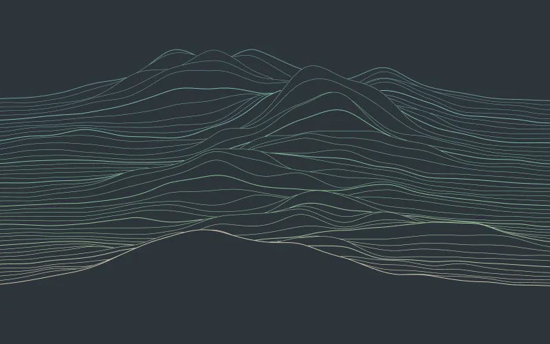
Ridgelines
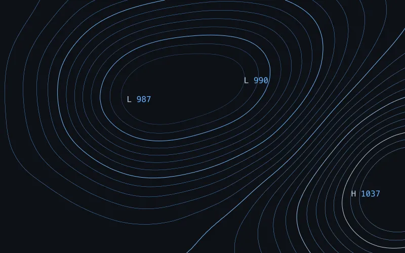
Isobars
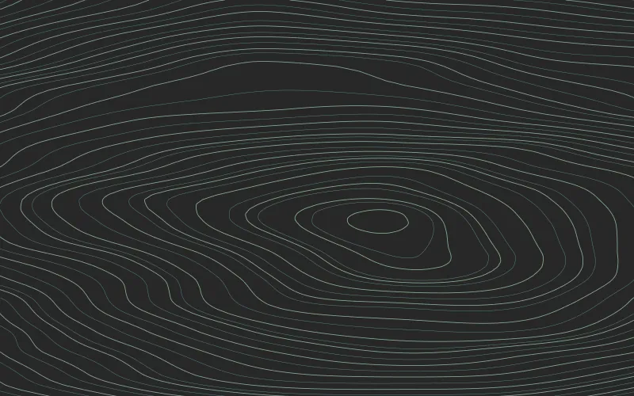
Wood grain
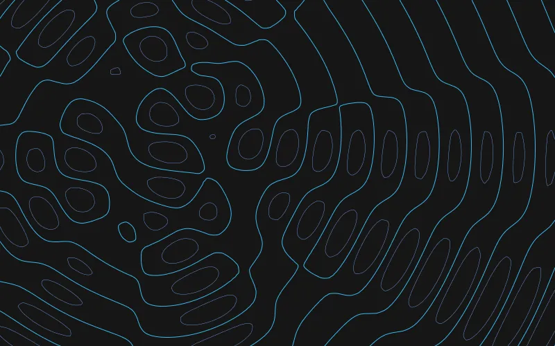
Interference
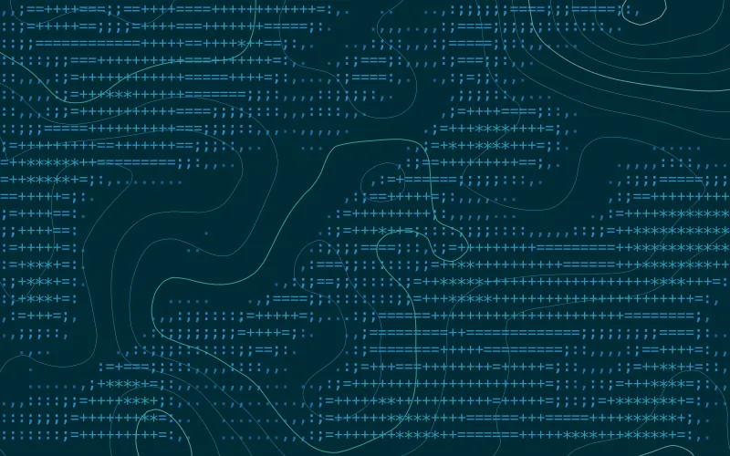
Hillshade topo
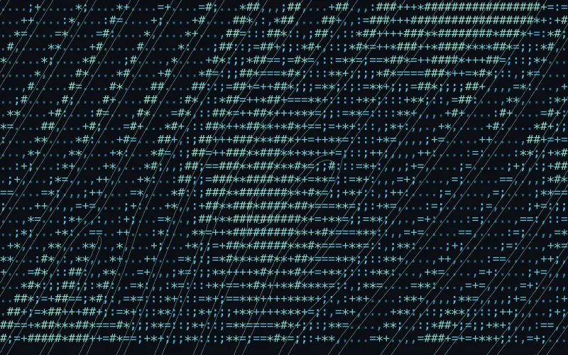
Dune ripples
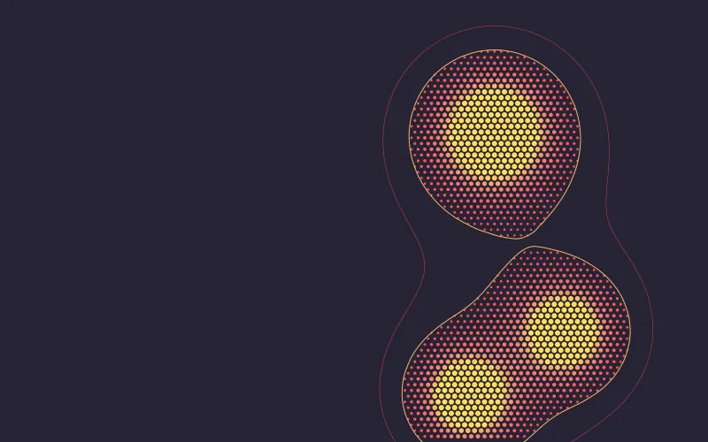
Lava lamp
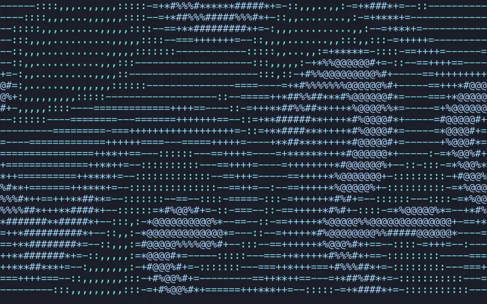
Ink in water
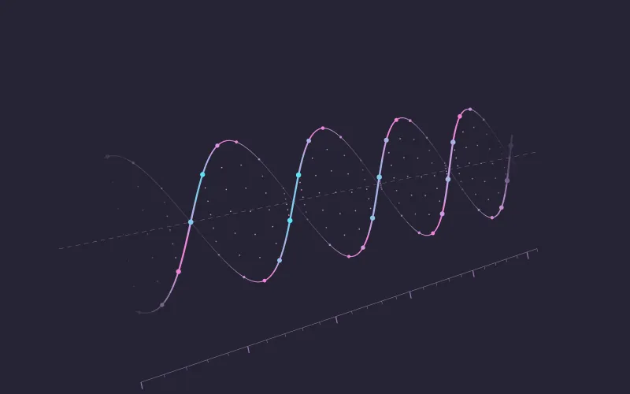
Helix
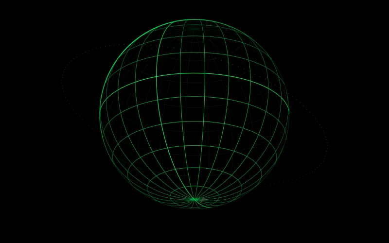
Wire globe
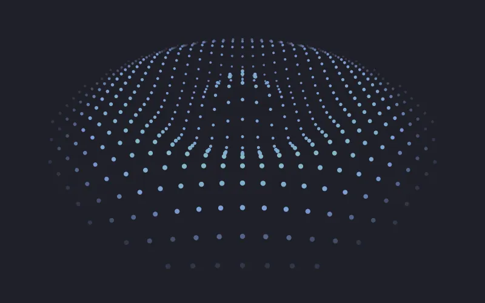
Dot wave
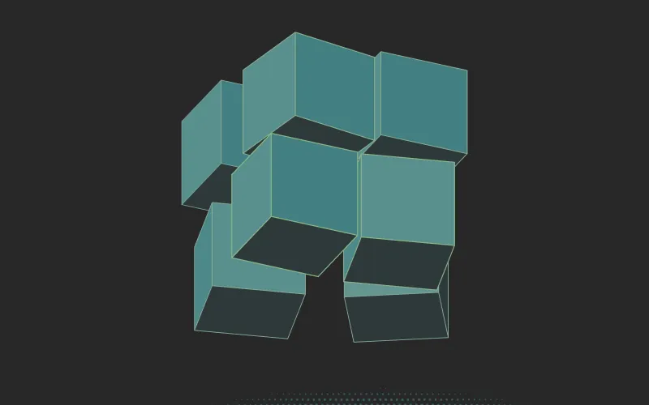
Cubes
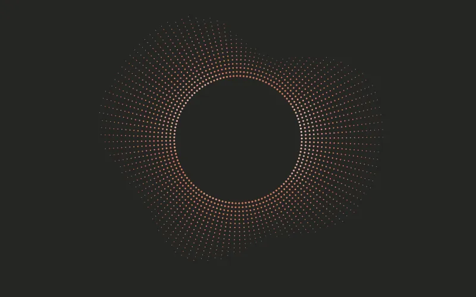
Sunburst
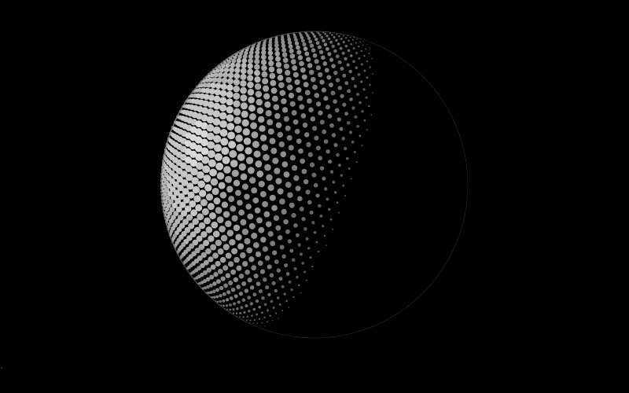
Moon
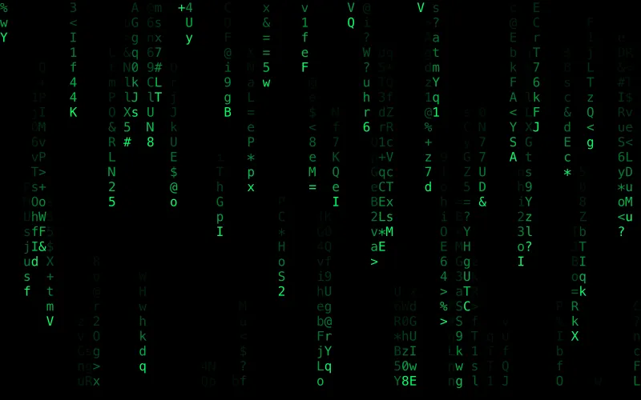
Matrix rain
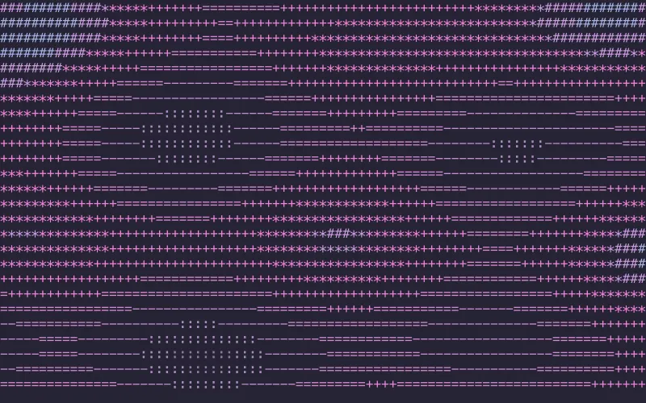
Plasma
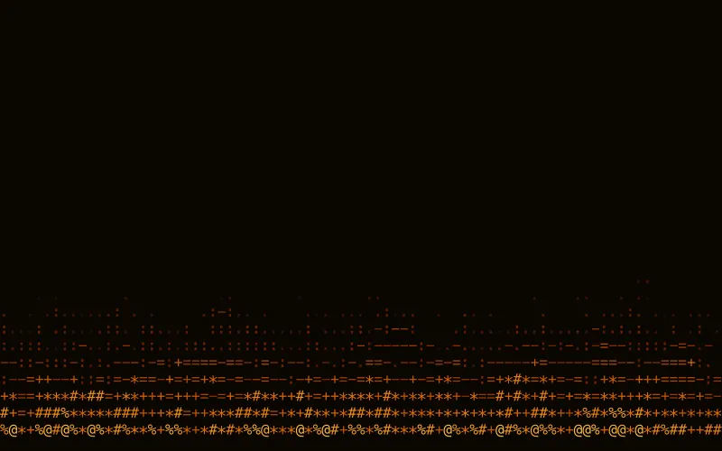
Fire
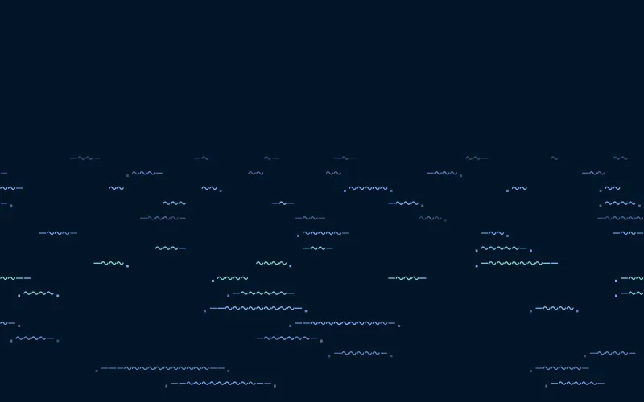
Waves
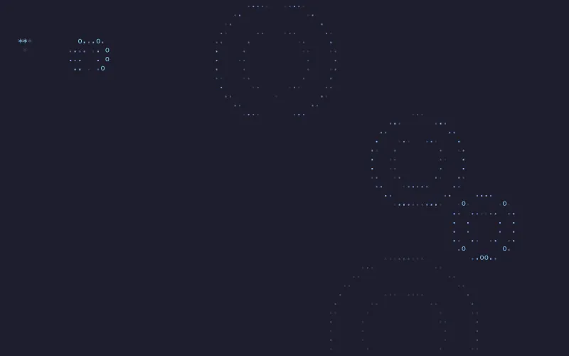
Ripples
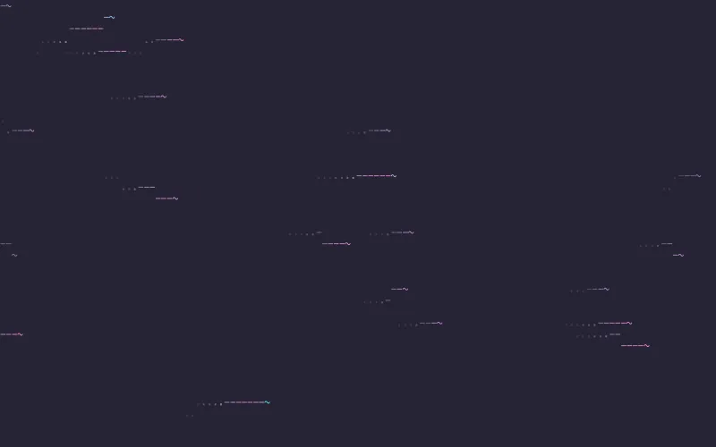
Wind
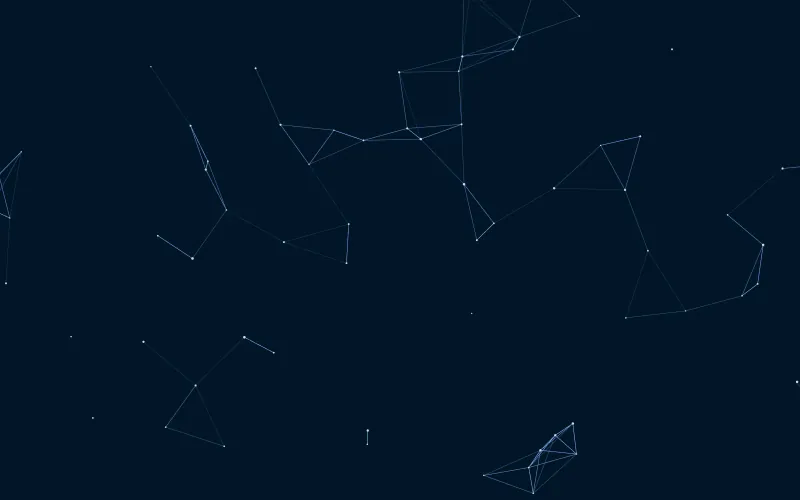
Constellation
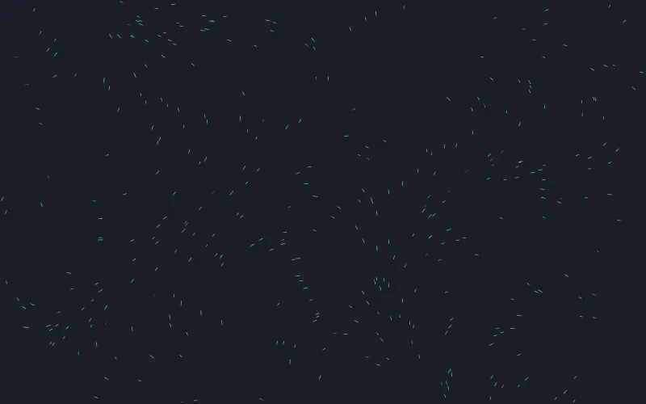
Flow field
Palettes from popular code editor themes, plus a few classic terminal colors. Pick one to recolor the animation at the top of this page.
Windows: download glyphdrift.exe. There's nothing to install.
Mac: download Glyphdrift-macos.zip, open it, and move Glyphdrift to your Applications folder.
The animation starts behind your desktop icons, and the Glyphdrift icon appears in the tray on Windows or the menu bar on a Mac.
Windows may warn that it doesn't recognize the app. Choose More info, then Run anyway.
macOS blocks the first launch because the app isn't notarized yet. Open System Settings › Privacy & Security, scroll down and click Open Anyway.
Windows: left-click the tray icon to open Settings. To start Glyphdrift when you sign in, right-click the icon and turn on Start with Windows.
Mac: click the menu bar icon for Settings and quick options. Turn on Open at Login to start Glyphdrift when you log in.